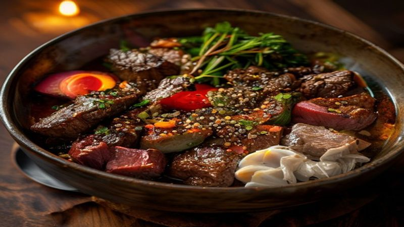

Korean Beef Bulgogi Bowl | Sweet & Savory Rice Bowl
This Korean Beef Bulgogi Bowl features tender, caramelized beef in a sweet-savory marinade over fluffy rice with pickled vegetables. Restaurant-quality Korean food at home in 20 minutes!
Ingredients
- 1.5 lbs beef sirloin, thinly sliced
- 4 tablespoons soy sauce
- 2 tablespoons brown sugar
- 1 tablespoon sesame oil
- 3 cloves garlic, minced
- 1 tablespoon ginger, grated
- 1 Asian pear or apple, grated
- Cooked white rice
- Kimchi for serving
- Sesame seeds and green onions for garnish
- Sliced cucumber and pickled radish
Instructions
Bulgogi — Korea's famous BBQ beef — is now your new weeknight dinner staple! Sweet, savory, and caramelized to perfection.
Make the marinade: mix soy sauce, brown sugar, sesame oil, garlic, ginger, and grated pear. The pear is the secret to tender, flavorful meat!
Toss the thinly sliced beef in the marinade. For best results, marinate for 30 minutes (or even just 10 minutes works great).
Heat a large skillet or wok over high heat until smoking. Cook the beef in batches without overcrowding — this is key to getting caramelization instead of steaming.
Cook each batch for 2-3 minutes until beautifully charred and caramelized. The sugars in the marinade create incredible flavor.
Serve over steamed rice with kimchi, sliced cucumber, pickled radish, sesame seeds, and green onions. Drizzle any remaining pan sauce over the top!
This bulgogi bowl is perfect for meal prep — the beef keeps well for 3-4 days. Try it in lettuce wraps or tacos for a Korean fusion twist!
Recommended Kitchen Essentials
Every great recipe starts with great tools. Here are our top picks to make cooking easier and more enjoyable:
Support Quick Bites Kitchen — When you purchase through our links, we may earn a small commission at no extra cost to you. This helps us keep creating free recipes for everyone. Thank you!